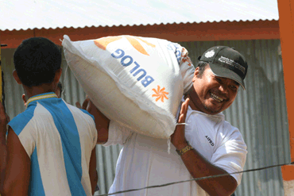
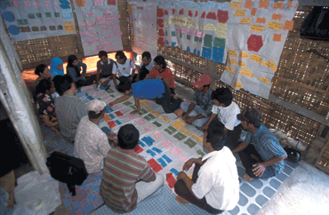

Lembaga Swadaya Masyarakat
 Dari Dewi:
Dari Dewi:
|  |
| Reproduced with the permission of M. Ashar and AusAID |
|  |
| Reproduced with the permission of Jack Picone and AusAID |
Dewi carikan daftar LSM (yaitu Lembaga Swadaya Masyarakat) dan temukan sebuah situs web yang mengklasifikasikan LSM itu dalam kategori berikut:
Bencana dan musibah
LSM Anak
LSM Ekonomi
LSM HAM
LSM Kesehatan
LSM Lingkungan
LSM Media
LSM Pengawasan
LSM Perempuan
LSM Teknologi
Orangutan
Untuk informasi lebih lanjut, masukkanlah istilah ‘LSM’ di search-engine www.endonesia.com
Komentar

Re: Lembaga Swadaya Masyarakat, dari Ibu_Indah pada jam 07:42.
Respond in a journal/blog/email or discuss in a group with others. Use the following questions as prompts.
- Do the categories of NGOs mentioned above surprise you at all? Were any unexpected?
- LSM jenis apa yang paling penting?
- Yang mana yang kurang penting, menurut pendapat Anda?
- Kalau Anda mau bekerja di LSM atau menyumbangkan dana kepada sebuah LSM, LSM jenis apa yang akan Anda pilih?
Diskusikanlah!
 |